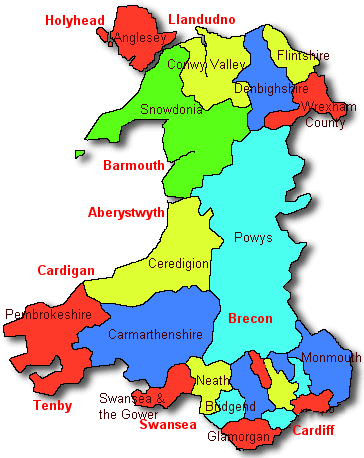

Homepage :
Beaumaris Castle :
Caernarfon Castle :
Conway Castle :
Castell DInas Bran :
Harlech Castle :
Timeline :
Contact
The Historic Castles of Wales

Wales is said to be "the castle capital of the world". It has about 400 castles, of which over 100 are still standing, either as ruins or as restored buildings. The rest have returned to nature, and today consist of ditches, mounds and earthworks, often in commanding positions.
Historic Castles in Wales by Country
Jump to Caernarfonshire
Isle of Anglesey
- Castell Aberlleiniog
- Beaumaris Castle (13th century)
Brecknockshire
- Blaenllyfni Castle (13th century)
- Brecon Castle (11th century)
- Bronllys Castle
Carmarthenshire
- Carreg Cennen Castle
- Carmarthen Castle (11th century)
- Dinefwr Castle (11th century)
Cardiganshire
- Aberdyfi Castle (12th century)
- Aberystwyth Castle (13th century)
- Cardigan Castle (13th century)
Caernarfonshire
- Bryn Bras Castle (Victorian)
- Caernarfon Castle (13th century)
- Criccieth Castle (13th century)
Denbighshire
- Bodelwyddan Castle
- Denbigh Castle
- Dinas Bran (12th century)
Flintshire
- Caergwrle Castle
- Ewloe Castle
- Flint Castle
Glamorganshire
- Caerphilly Castle (13th & 14th century)
- Candleston Castle (14th century)
- Cardiff Castle (11th century)
Merionethshire
- Castell y Bere (13th century)
- Harlech Castle (13th century)
Monmouthshire
- Abergavenny Castle (11th to 13th century)
- Betws Newydd Castle (11th century)
- Caerleon Castle (11th to 13th century)
Montgomeryshire
- Cefn Carnedd (Iron Age hill fort)
- Dolforwyn Castle (13th century)
- Fridd Faldwyn (hill fort)
Pembrokeshire
- Carew Castle (11th to 16th century)
- Llawhaden Castle (12th to 14th century)
- Manorbier Castle (12th to 14th century)
Back to the top